13.添加界面¶
在上一章中，你了解了终端命令，如何在终端中运行它们，以及如何使用Swift运行它们。现在，你要把你的知识运用到一个应用程序中，为sips命令的一些功能提供一个图形用户界面。
由于你现在是一个有经验的macOS应用开发者，你不需要从头开始。初始项目有所有的用户界面，但你必须使它工作。
在本章中，你将添加选择文件和文件夹的多个选项，并将你在上一章中创建的一般功能应用于更具体的命令。
你将开发一个名为ImageSipper的应用程序，它将为你提供编辑单个图片的控件，以及为一个完整的图片文件文件夹生成缩略图的能力。
初始项目¶
在下载的资料中找到本章的文件夹，打开starter项目。建立并运行，看看你在做什么：
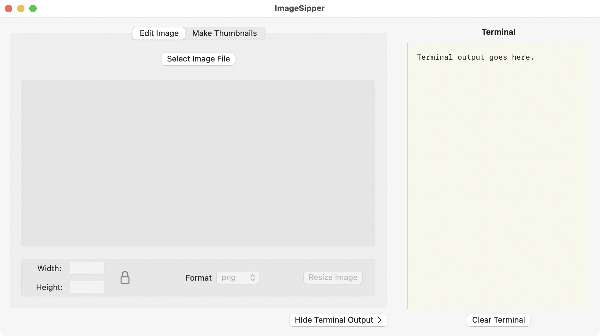
该应用程序窗口有一个标签视图，有两个标签，每个标签提供不同的图像编辑功能。边上有一个终端输出视图，所以你可以看到应用程序使用了哪些终端命令，以及它得到了哪些反馈。
大多数控件都是不活跃的，由于还没有办法选择一个图像文件，所以你不能做太多。
回到Xcode，看看项目导航器中的组和文件：
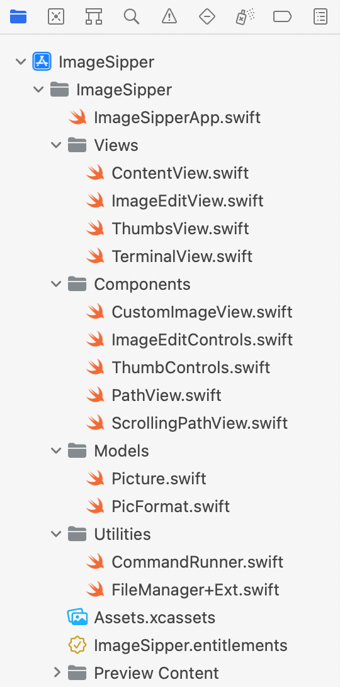
通过这个列表中的组：
Views：ContentView是主窗口视图，包含一个TabView和TerminalView。TabView包含ImageEditView和ThumbsView。Components：这些是主视图所使用的子视图。CustomImageView格式化了一个Image视图。两个Controls视图在TabView的每个视图的底部提供输入字段和按钮。你将使用PathView和ScrollingPathView来显示所选文件或文件夹的位置。Models：Picture是一个结构，用来保存你用sips读取的图像数据。PicFormat是一个列举支持的图像格式的枚举。Utilities：CommandRunner是一个包裹着你在playground写的函数的类，还有一个发布输出的方法。FileManager+Ext是FileManager的一个扩展，用于确定文件类型和创建新的文件路径。
像这样分离组件和实用程序使它们在其他项目中更容易重复使用。
现在你的应用程序已经运行，是时候让它发挥作用了。
选择文件和文件夹¶
在你编辑任何图像之前，第一步是让你的用户选择一个图像文件或一个图像文件夹。
在第11章"添加菜单控件"中，你使用了NSSavePanel来让用户选择保存文件的位置。这一次，你想让用户选择一个现有的文件，所以你将使用NSOpenPanel。这两者都继承自NSPanel，所以它们共享一些属性。
打开ImageEditView.swift。找到名为selectImageFile()的空方法，并把这段代码放在里面：
// 1
let openPanel = NSOpenPanel()
openPanel.message = "Select an image file:"
// 2
openPanel.canChooseDirectories = false
openPanel.allowsMultipleSelection = false
openPanel.allowedContentTypes = [.image]
// 3
openPanel.begin { response in
if response == .OK {
// 4
imageURL = openPanel.url
}
}
那么，这个方法现在是怎么做的呢？
- 创建一个新的
NSOpenPanel并给它一个头。 - 配置面板，使用户只能选择一个图像文件。
- 显示面板并等待用户关闭它。
- 如果响应是
OK，将imageURL设置为选定的URL。
5.建立并运行应用程序，点击Select Image File并选择任何图像。因为CustomImageView已经使用了imageURL，所以你的图片出现了：
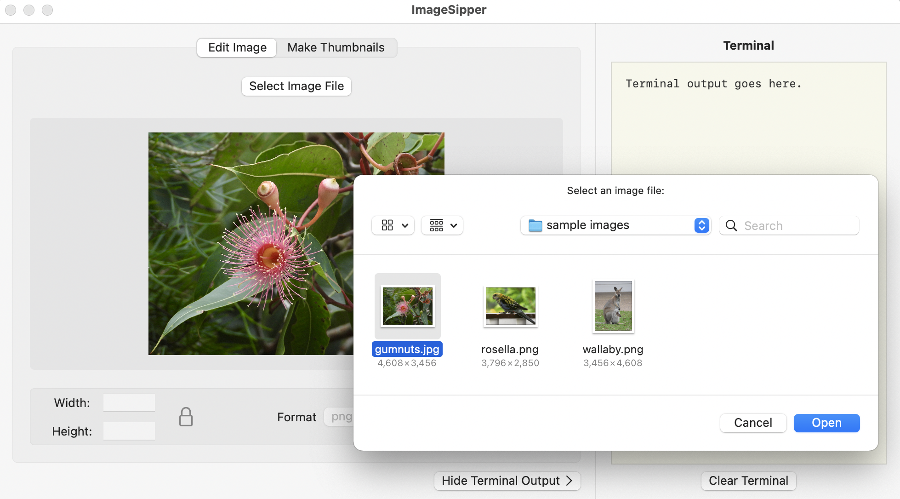
注意面板不会让你选择一个文件夹、任何非图像文件类型或多个文件。
选择文件夹¶
在你设置面板的时候，打开ThumbsView.swift，用selectImagesFolder()填充：
let openPanel = NSOpenPanel()
openPanel.message = "Select a folder of images:"
// 1
openPanel.canChooseDirectories = true
openPanel.canChooseFiles = false
openPanel.allowsMultipleSelection = false
openPanel.begin { response in
if response == .OK {
// 2
folderURL = openPanel.url
}
}
这个版本有什么不同？
- 配置只允许你选择一个文件夹。
- 当用户选择一个文件夹时，你设置
ThumbsView用来填充图片名称和缩略图列表的属性。
建立并运行，切换到Make Thumbnails选项卡，点击Select Folder of Images并试运行：
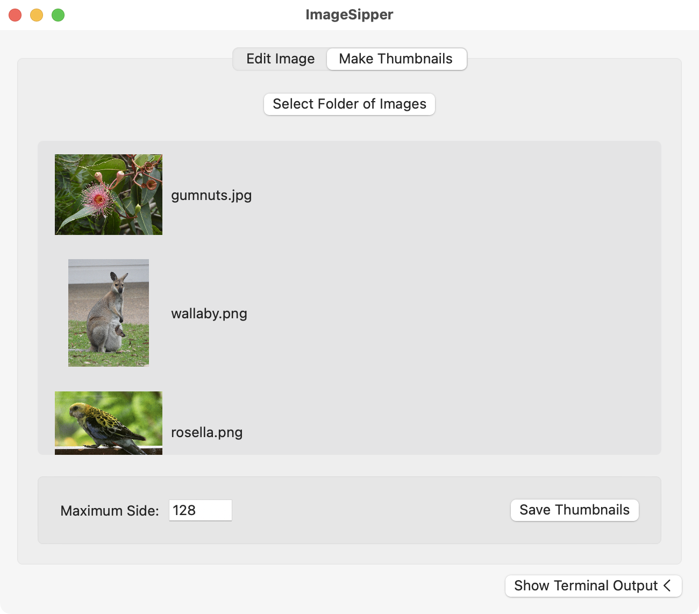
ThumbsView使用AsyncImage来处理图片，所以在图片加载时，应用程序保持响应。
现在你有了一个为每个视图提供图片或文件夹的方法，但难道没有一个更简单的方法吗？
拖动和下拉¶
允许用户将图像文件或文件夹拖放到视图中如何？SwiftUI很容易检测到拖放，但从拖放的数据中找出URL就有点晦涩难懂了。
首先打开CustomImageView.swift，为CustomImageView添加这个新方法：
// 1
func loadURL(from data: Data?) {
// 2
guard
let data = data,
let filePath = String(data: data, encoding: .utf8),
let url = URL(string: filePath) else {
return
}
// 3
imageURL = url
}
踏踏实实地做这件事：
onDrop修改器将在检测到掉落时调用该方法，并传递一个可选的Data参数。- 如果有任何
Data，尝试将其转换为String，并使用该String来创建URL。 - 如果成功了，你会得到一个
URL，你可以用它来设置imageURL属性。这是一个@Binding属性，所以它的新值会流回ImageEditView。
Note
你不能在这里使用URL(fileURLWithPath: filePath)。你必须使用URL(string: filePath)，否则你会得到一些奇怪的文件ID，无法加载。
你几乎准备好为CustomImageView添加onDrop修改器，但首先，你需要一个布尔属性来保持拖放操作的状态。
在CustomImageView的顶部添加这个：
@State private var dragOver = false
每当拖动进入目标时，它被设置为true，每当拖动离开时，它被设置为false。
处理下降¶
最后，你可以将这个onDrop修改器添加到Image，取代//onDrop here。
// 1
.onDrop(
of: ["public.file-url"],
isTargeted: $dragOver
) { providers in
// 2
if let provider = providers.first {
// 3
provider.loadDataRepresentation(
forTypeIdentifier: "public.file-url") { data, _ in
// 4
loadURL(from: data)
}
}
// 5
return true
}
在这块代码中发生了很多事情：
- 添加一个
onDrop修改器，说明它可以接受任何文件URL。设置它使用dragOver属性来存储视图是否是当前拖动操作的目标。onDrop的动作接收一个NSItemProvider的数组。 - 这个编辑器一次只处理一个文件，所以要寻找第一个
NSItemProvider。 - 如果提供者存在，查询它的数据，寻找
onDrop接受的类型，也就是文件URL。这得到两个选项。Data和Error。 - 忽略任何错误。将可选数据传递给
loadURL(from:)进行处理。 - 返回
true以显示该方法已经处理了下降。
总而言之，onDrop修改器必须知道接受什么数据类型，并且必须有一个与布尔属性的绑定，当下降到它的视图上时，它将设置为true。onDrop动作接收NSItemProvider，它可能包含预期类型的数据。
这是一个密集的部分，但现在你可以建立和运行这个应用程序了。试试把一个图像文件拖到第一个视图中：
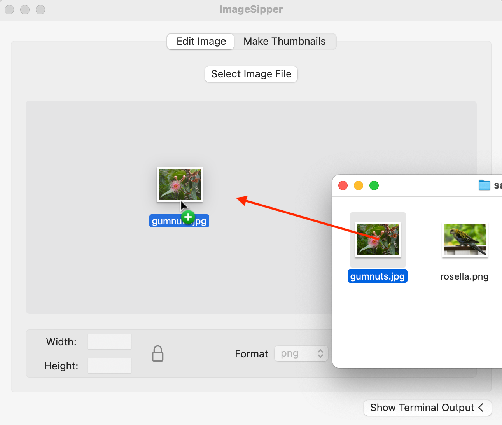
所以现在你有两种方法让用户导入图片文件。
拖放文件夹¶
这给了你CustomImageView的拖放功能。现在，你可以将同样的技术应用到ThumbsView。
首先在ThumbsView.swift中添加数据处理方法：
func loadURL(from data: Data?) {
guard
let data = data,
let filePath = String(data: data, encoding: .ascii),
let url = URL(string: filePath) else {
return
}
if FileManager.default.isFolder(url: url) {
folderURL = url
}
}
这与CustomImageView中的loadURL(from:)类似，但它增加了一个检查，以确保URL使用FileManager+Ext.swift的方法指向一个文件夹。
接下来，在ThumbsView的顶部定义dragOver属性：
@State private var dragOver = false
最后，插入相同的onDrop修改器，再次替换//onDrop here：
.onDrop(
of: ["public.file-url"],
isTargeted: $dragOver
) { providers in
if let provider = providers.first {
provider.loadDataRepresentation(
forTypeIdentifier: "public.file-url") { data, _ in
loadURL(from: data)
}
}
return true
}
构建并运行，切换到Make Thumbnails标签，拖动一个文件夹到视图中：
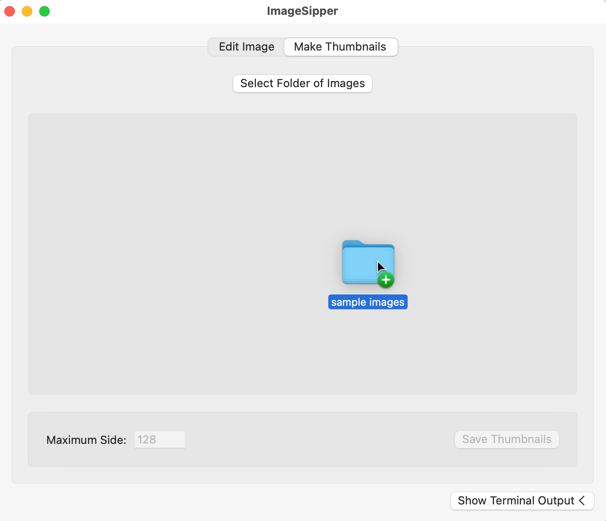
试着把文件放到Make Thumbnails标签中，或把文件夹放到Edit Image标签中。如果你把一个文本文件放到Edit Image中会发生什么？你的代码正确地处理了适当的投放，而忽略了所有其他的投放。干得好!
显示文件路径¶
你现在有多种方法将图片或文件夹放入应用程序。但是一旦它们进入了，就没有任何东西可以显示这些文件的位置了。
AppKit有一个叫做NSPathControl的类来实现这个功能。打开Components组中的PathView.swift。它使用NSViewRepresentable来使AppKit控件对SwiftUI可用。
这其中只有一个问题。如果你有一个深度嵌套的文件或文件夹，对于窗口来说，路径会变得太长。为了解决这个问题，你将使用一个PathView嵌入到ScrollView中。查看ScrollingPathView.swift可以看到这个，还有一些额外的样式。
你将在两个地方使用这个新视图。
首先，打开ImageEditView.swift，用// path view here代替：
ScrollingPathView(url: $imageURL)
接下来，进入ThumbsView.swift，这次用// path view here替换：
ScrollingPathView(url: $folderURL)
建立和运行。导入一个图像和一个文件夹，看看新的路径控制：
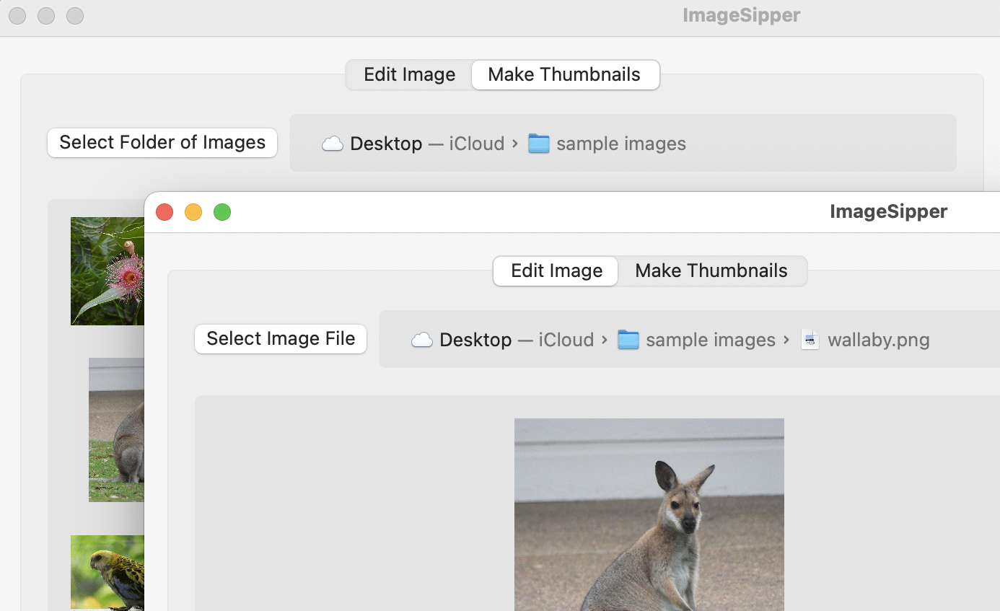
如果文件路径太长，无法看到，可以向侧面滚动。
这很好，但是如果能够双击该路径中的一个文件或文件夹来显示它，那不是很好吗？要做到这一点，你需要在PathView中添加一个Coordinator。协调员是一个允许NSViewRepresentable视图响应事件或委托方法的类。
要制作一个协调器，打开PathView.swift并添加这个类。因为它只被PathView使用，你可以把它放在PathView结构的内：
// 1
class Coordinator {
// 2
@objc func handleDoubleClick(sender: NSPathControl) {
// 3
if let url = sender.clickedPathItem?.url {
// 4
NSWorkspace.shared.selectFile(
url.path,
inFileViewerRootedAtPath: "")
}
}
}
这又是在潜心研究AppKit，但它在做什么呢？
- 声明一个可以作为
PathView协调者的类。 - 在
NSPathControl中添加一个方法来响应双击。这个方法必须有@objc标记，这样NSPathControl才能识别并调用它。 - 检查一个
URL是否被双击。 - 如果是，使用
NSWorkspace在Finder窗口中显示它。
NSWorkspace允许访问内置的应用程序和服务。在第三章"添加菜单和工具栏"中，你用它在默认浏览器中打开一个URL，但你也可以用它来打开Finder窗口。
苹果文档说，如果你为inFileViewerRootedAtPath参数提供一个空字符串，它就会使用当前的Finder窗口。给它提供任何字符串，它就会打开一个新的窗口。在macOS 12中，他们似乎颠覆了这一点。
有了Coordinator类，你就可以连接它了。
在PathView中添加这个新方法：
func makeCoordinator() -> Coordinator {
return Coordinator()
}
这是NSViewRepresentable的一个标准方法，用于设置一个协调员，现在你可以告诉PathView使用它。
在makeNSView(context:)中，在return行之前，添加这个：
pathControl.target = context.coordinator
pathControl.doubleAction = #selector(Coordinator.handleDoubleClick)
AppKit控件使用目标和动作工作。你指定一个目标对象来接收来自控件的事件，并且你指定一个选择器作为控件对特定事件的调用动作。你在TIME-ATO应用程序中使用@IBAction进行了图形化的操作。
这里你把协调器设置为目标，把它的handleDoubleClick(sender:)方法设置为双击动作。
建立并运行应用程序，导入一张图片，双击路径控件中的任何项目，在Finder中打开它：
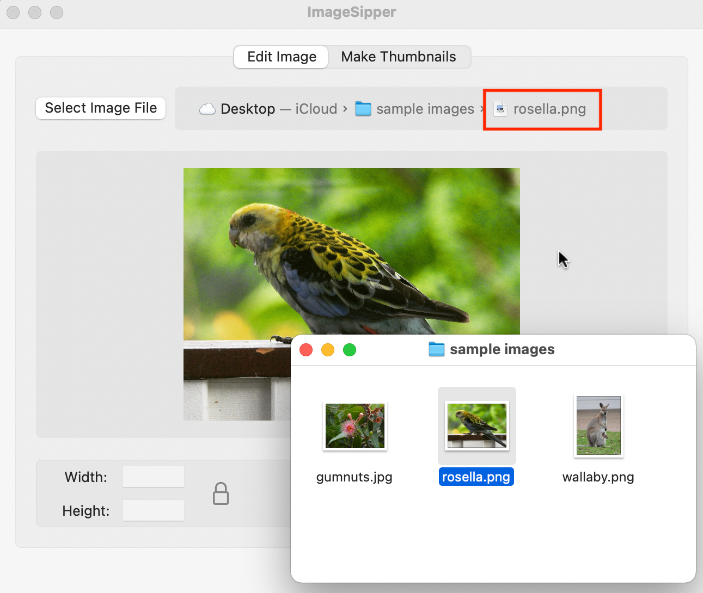
使用sips¶
你现在对文件对话框、拖放文件和文件路径有了很多了解。但现在是不是该开始编辑一些图像了？首先，你将使用sips从导入的图像中读取数据。
你有一个叫做CommandRunner的通用类。你可以在那里添加所有的sips命令，但是为了尽可能的保持它的可重用性，你要做一个单独的类来访问sips。
在Utilities组中，制作一个新的Swift文件，名为SipsRunner.swift。
将其内容替换为：
import SwiftUI
// 1
class SipsRunner: ObservableObject {
// 2
var commandRunner = CommandRunner()
// 3
var sipsCommandPath: String?
func checkSipsCommandPath() async -> String? {
if sipsCommandPath == nil {
sipsCommandPath = await commandRunner.pathTo(command: "sips")
}
return sipsCommandPath
}
// 4
func getImageData(for imageURL: URL) async -> String {
// 5
guard let sipsCommandPath = await checkSipsCommandPath() else {
return ""
}
// 6
let args = ["--getProperty", "all", imageURL.path]
let imageData = await commandRunner
.runCommand(sipsCommandPath, with: args)
return imageData
}
}
这里发生了什么？
- 声明一个新的类，并表明它符合
ObservableObject。 SipsRunner类有自己的CommandRunner的实例。- 每次使用
sips命令都需要它的完整路径，所以你把它存储在一个属性中。如果需要的话，该方法设置它，并返回存储的值。 getImageData(for:)运行sips命令来获取一个图像的所有数据。- 该方法首先检查它是否有
sips命令的路径。 - 然后，它使用你在
playground中使用的相同语法，并将图像信息作为String返回。
这个应用程序的很多不同部分都需要访问SipsRunner，所以你要把它设置为@EnvironmentObject。这就避免了在层次结构中通过每个视图传递它的需要。
打开ImageSipperApp.swift，在结构的顶部添加这个属性声明：
@StateObject var sipsRunner = SipsRunner()
接下来，在ContentView()后面添加这个修改器：
.environmentObject(sipsRunner)
有了这些，你就可以开始使用它了。
读取图像信息¶
打开ImageEditView.swift，在结构的顶部添加这一行：
@EnvironmentObject var sipsRunner: SipsRunner
这让视图可以访问sipsRunner。但是只要你在SwiftUI视图中添加一个EnvironmentObject，你就会破坏预览。要再次启用它，请将EnvironmentObject的一个实例作为修改器添加到预览中，像这样：
ImageEditView(selectedTab: .constant(.editImage))
.environmentObject(SipsRunner())
在你使用预览之前，你需要为每个获得EnvironmentObject的视图做这个。
接下来，找到名为getImageData()的空方法并将其填入：
// 1
guard
let imageURL = imageURL,
FileManager.default.isImageFile(url: imageURL)
else {
return
}
// 2
let imageData = await sipsRunner.getImageData(for: imageURL)
// 3
picture = Picture(url: imageURL, sipsData: imageData)
每当imageURL发生变化时，视图就会调用这个方法，但它是做什么的呢？
- 确认有一个URL并且它指向一个图像文件。
- 使用
sipsRunner来获取图像文件的信息。 - 将这些信息转换成
Picture。ImageEditControls与Picture有一个绑定，所以它现在可以显示图像属性并激活其控件。
建立并运行，选择任何图像文件，你会看到它的尺寸和格式出现：
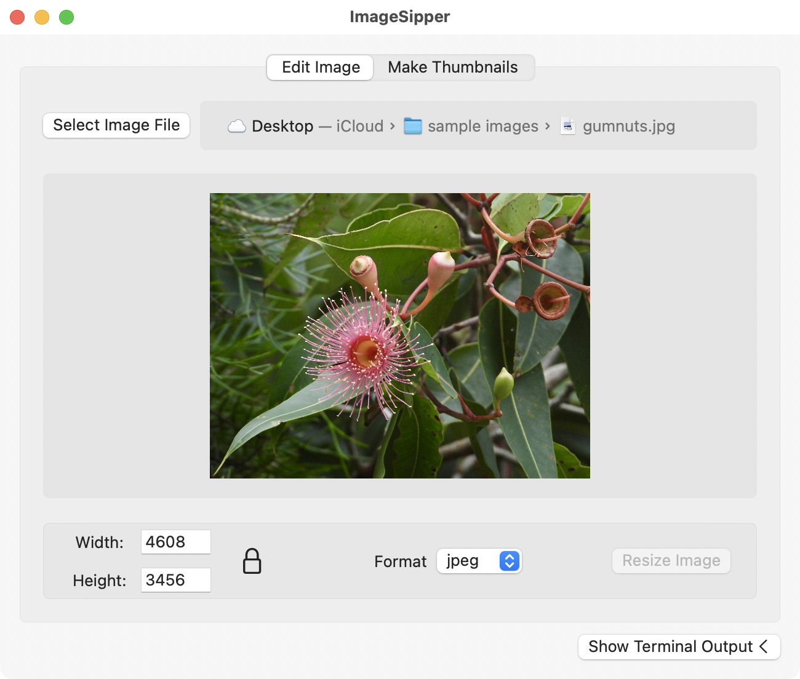
显示终端输出¶
到目前为止，终端输出视图一直顽固地保持不变，所以在添加更多的命令之前，让它显示正在发生的事情如何？
打开CommandRunner.swift。它有一个名为output的发布属性和一个发布该属性的方法。修改output的方法是异步的，但你想让output改变用户界面。所以publishOutput(_:)在MainActor上更新output，以避免因试图从后台线程更新界面而导致的错误。这等同于使用DispatchQueue.main.async { }。
当每块数据变得可用时，runCommand(_:with:)更新output。sips命令的运行速度都很快，但如果你运行ping这样的慢速命令，你会看到每一行的到来。
下一个任务是把数据从CommandRunner中拿到TerminalView中。由于SipsRunner拥有CommandRunner，你的第一个想法可能是设置Text视图来显示sipsRunner.commandRunner.output。这样编译没有错误，但没有得到数据。你必须让TerminalRunner直接访问CommandRunner，这需要几个步骤。
从ContentView.swift开始，给ContentView添加这个属性：
@EnvironmentObject var sipsRunner: SipsRunner
现在ContentView可以访问sipsRunner，它可以将其commandRunner传递给TerminalView。
将TerminalView()行改为这样，忽略错误：
TerminalView(commandRunner: sipsRunner.commandRunner)
现在，打开TerminalView.swift，将output属性声明替换为：
@ObservedObject var commandRunner: CommandRunner
追究错误，在ScrollView里面，把Text(output)替换为：
Text(commandRunner.output)
接下来，将Clear Terminal按钮的动作改为：
commandRunner.clearOutput()
而现在你在预览中只剩下一个错误。你可以通过改变previews的内容来解决它：
TerminalView(commandRunner: CommandRunner())
这是一个错综复杂的数据传递链，但最后，你可以建立和运行这个应用程序。拖动一张图片到视图中，阅读边上的终端输出，可以看到你在playground上看到的相同信息：
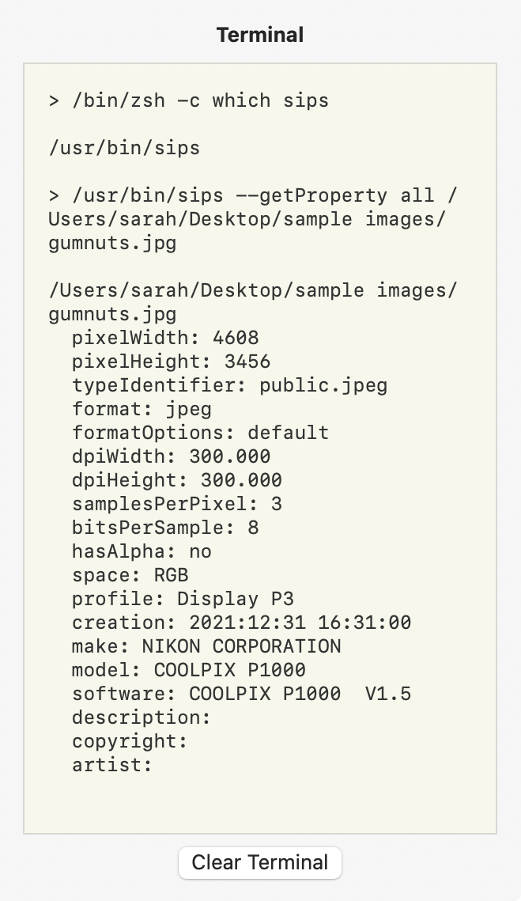
虽然在这个应用程序中并不是真的需要，但显示终端输出可能对其他类似的应用程序很重要。
调整图像大小¶
你已经组装了很多应用程序的组件，所以现在终于可以调整一些图片的大小了。这需要一个新的SipsRunner方法。
打开SipsRunner.swift并添加这个：
// 1
func resizeImage(
picture: Picture,
newWidth: String,
newHeight: String,
newFormat: PicFormat
) async -> URL? {
// 2
guard let sipsCommandPath = await checkSipsCommandPath() else {
return nil
}
// 3
let fileManager = FileManager.default
let suffix = "-> \(newWidth) x \(newHeight)"
var newURL = fileManager.addSuffix(of: suffix, to: picture.url)
newURL = fileManager.changeFileExtension(
of: newURL,
to: newFormat.rawValue
)
// 4
let args = [
"--resampleHeightWidth", newHeight, newWidth,
"--setProperty", "format", newFormat.rawValue,
picture.url.path,
"--out", newURL.path
]
// 5
_ = await commandRunner.runCommand(sipsCommandPath, with: args)
// 6
return newURL
}
看起来这里发生了很多事情，但要一点一点的来：
- 你将用一个
Picture调用这个方法，并提供编辑过的参数。 - 和以前一样，第一个任务是检查
sipsCommandPath。 - 使用
FileManager扩展名，根据图片的大小和格式生成一个新的文件URL。 - 这个块组装参数以传递给
sips，就像你在playground上做的那样。在这种情况下，你要改变高度、宽度和图像格式。你也要提供输入和输出文件的路径。 - 运行
sips命令，忽略其结果。 - 返回新创建文件的
URL。
有了这些，打开ImageEditControls.swift。这是个拥有编辑设施的子视图，所以它是你为sipsRunner收集数据的地方。
首先通过在顶部添加这个来让视图访问sipsRunner：
@EnvironmentObject var sipsRunner: SipsRunner
接下来，向下滚动，找到空的resizeImage()方法，并将其填入：
// 1
guard let picture = picture else {
return
}
// 2
imageURL = await sipsRunner.resizeImage(
picture: picture,
newWidth: picWidth,
newHeight: picHeight,
newFormat: picFormat)
这又有什么作用呢？
- 检查是否有图片需要调整大小。
- 使用编辑字段和格式选择器的值，调用你刚刚添加到
sipsRunner的方法。这将imageURL设置为返回值，这样新编辑的图片就会出现在编辑视图中。
Mac沙盒再次出现¶
看起来一切就绪，但请稍等......Mac的沙盒有问题了。
终端可以访问你的Mac上的几乎所有东西。一个Swift playground也有自由读取和写入的权限。但是一个应用程序没有，所以如果你现在运行这个应用程序并试图调整图片的大小，它会失败，Xcode控制台会显示Operation not permitted。
当你的应用程序保存文件时，它可以将它们保存在自己的容器中。这对这个应用程序没有好处，因为你的用户将无法找到它们。有一个沙盒选项允许访问用户选择的文件，所以你会认为如果你要求用户选择一个保存位置，那么它就会工作，但它不会。你用一个Process来保存新的图像文件，它绕过了所有的常规机制。解决办法是关闭这个应用程序的沙箱。
这样做的缺点是，你将无法通过Mac App Store发布该应用程序。
要关闭沙盒，在项目导航器的顶部选择该项目。选择ImageSipper目标，然后选择顶部的Signing & Capabilities。点击App Sandbox部分右上方的Trashcan来删除它：
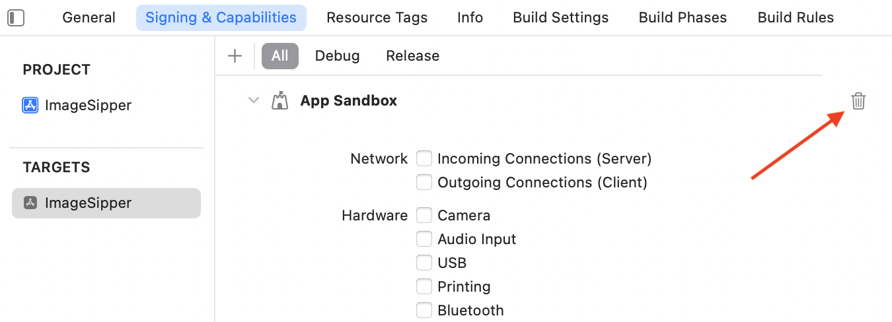
而现在，你终于准备好调整你的图片大小了。
建立并运行该应用程序。导入任何图像文件，改变一些设置，然后点击Resize Image。你会在终端输出中看到这些命令，你的新文件会出现在与原文件相同的文件夹中。编辑视图将显示你调整后的图像：
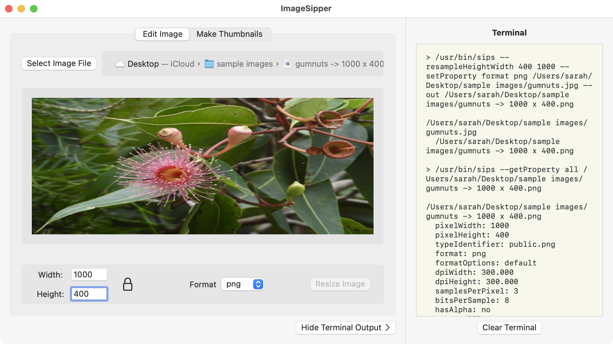
除非你非常仔细地计算了新的尺寸，否则你的第一印象可能是这已经压扁和扭曲了你的图像。你是对的，所以现在是考虑长宽比的时候了。
锁定长宽比¶
如果你使用过SwiftUI的Image视图，你就会熟悉长宽比。在SwiftUI中显示图像时，你可以设置.aspectRatio(contentMode: .fit)或.aspectRatio(contentMode: .fill)来使它看起来正确。
在这种情况下，你想让用户选择锁定长宽比，以避免扭曲图片，或者如果他们愿意的话，也可以解锁它。
Preview在其Adjust Size对话框中也有同样的功能，你可以选择是否按比例缩放：
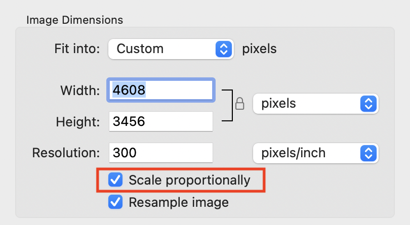
该应用程序已经有一个按钮，看起来像是锁定和解锁长宽比，只是它还没有做任何事情。但在你开始编码之前，考虑一下这个问题。
你可以添加一个onChange修改器来检测宽度的变化，并且每当它发生变化时，改变高度来匹配。你也可以添加一个类似的修改器来检测高度，调整宽度修改器。但每一个都会触发另一个。你调整宽度，改变高度，再改变宽度，再改变高度，如此反复。
你需要的是一种确定用户当前正在编辑的字段的方法，这样你就可以只以编程方式调整其他尺寸。你将使用@FocusState来追踪这个。
专注于编辑字段¶
首先打开ImageEditControls.swift，向下滚动到EditSizeView，它是一个提取的子视图。
添加这两个属性：
@FocusState private var widthFieldHasFocus: Bool
@FocusState private var heightFieldHasFocus: Bool
你将使用这些来跟踪焦点字段，但字段需要设置这些值。属性封装器将这些属性标记为视图在获得和失去焦点时可以修改的属性。
把body中的第一个VStack替换成这样：
VStack {
HStack {
Text("Width:").frame(width: 50)
TextField("", text: $picWidth)
.focused($widthFieldHasFocus) // NEW
.frame(maxWidth: 60)
}
HStack {
Text("Height:").frame(width: 50)
TextField("", text: $picHeight)
.focused($heightFieldHasFocus) // NEW
.frame(maxWidth: 60)
}
}
这两行是focused修改器。它们将字段的焦点状态与你添加的两个属性绑定在一起，所以当宽度字段处于活动状态时，widthFieldHasFocus是true，但当光标离开该字段时，它将重置为false。
现在你有了调整长宽比所需的信息，而不会陷入无限循环。:]
在EditSizeView的body结尾处插入这两个修改器，替换掉// onChanges here：
// 1
.onChange(of: picWidth) { newValue in
// 2
if widthFieldHasFocus {
// 3
adjustAspectRatio(newWidth: newValue, newHeight: nil)
}
}
// 4
.onChange(of: picHeight) { newValue in
if heightFieldHasFocus {
adjustAspectRatio(newWidth: nil, newHeight: newValue)
}
}
他们是做什么的？
- 当
picWidth属性发生变化时进行检测。 - 检查宽度字段是否有焦点。
- 如果有，用新的宽度调用
adjustAspectRatio(newWidth:newHeight:)，而将newHeight参数设置为nil。 - 对高度字段做同样的处理，但这次用新的高度调用
adjustAspectRatio(newWidth:newHeight:)，将newWidth参数设置为nil。
建立并运行应用程序，拖入一张照片并调整其中一个尺寸。现在，另一个尺寸也会调整到与之匹配。解除锁定按钮，你可以再次独立设置两边：
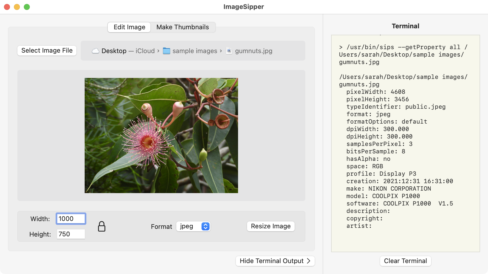
这就结束了该应用程序的图像编辑方面的工作。现在，是时候处理一个图片文件夹了。
创建缩略图¶
当你从终端运行sips时，它可以使用通配符批量处理文件。请看这个命令：
sips --resampleHeight 600 *.png --out resized_images
这将抓取当前目录下的每个PNG文件，将其高度调整为600，并将调整后的图片保存到resized_images文件夹中。
你不能在Swift的Process中这样做，因为Process需要精确的文件路径，不能使用通配符或文件路径的缩写。但你知道如何在Swift中写循环，所以你可以列出文件，并逐一处理。
当你编辑图像文件时，你给每个文件分配一个新的名字。当为一个文件夹的文件创建缩略图时，你要保持名字不变，但把缩略图文件保存到不同的文件夹中。这需要另一个NSOpenPanel来选择--也可以选择创建--一个目标文件夹。
打开ThumbControls.swift；这就是行动发生的地方。
找到空的selectThumbsFolder()方法，用这个来填充它：
let openPanel = NSOpenPanel()
openPanel.message = "Select the thumbnails folder:"
// 1
openPanel.canCreateDirectories = true
openPanel.canChooseDirectories = true
openPanel.canChooseFiles = false
openPanel.allowsMultipleSelection = false
openPanel.begin { response in
if response == .OK, let url = openPanel.url {
// 2
Task {
await createThumbs(in: url)
}
}
}
这就像你用来允许选择文件夹的面板，但是：
- 主要的区别是
canCreateDirectories。默认情况下是false，但将其改为true后，用户可以在面板中创建一个新的文件夹。 - 如果用户选择了一个文件夹的
URL，使用Task异步调用createThumbs(in:)。
添加一个新的sips命令¶
有了这些，你现在需要提供代码来创建缩略图，所以打开SipsRunner.swift并添加这个：
// 1
func createThumbs(
in folder: URL,
from imageURLs: [URL],
maxDimension: String
) async {
// 2
guard let sipsCommandPath = await checkSipsCommandPath() else {
return
}
// 3
for imageURL in imageURLs {
let args = [
"--resampleHeightWidthMax", maxDimension,
imageURL.path,
"--out", folder.path
]
// 4
_ = await commandRunner.runCommand(sipsCommandPath, with: args)
}
}
这个方法在做什么？
- 它接收一个目标文件夹的URL，一个图像文件的
URL数组和缩略图的最大尺寸。 - 和所有的
SipsRunner方法一样，它开始检查sips可执行文件路径。 - 然后，它在图像URL中循环，将其最大尺寸设置为
maxDimension参数。这意味着横向格式的图像的宽度被限制在这个尺寸，而纵向图像的高度被限制。--out参数是一个文件夹路径，所以sips使用相同的文件名，但在新的文件夹中。 - 等待
sips保存缩略图。
你已经有了询问文件夹的能力，你也有了创建缩略图文件的方法。现在，你需要把这些连接起来。
调用新命令¶
回到ThumbControls.swift并开始添加EnvironmentObject以使其访问sipsRunner：
@EnvironmentObject var sipsRunner: SipsRunner
接下来，在createThumbs(in:)中填写：
// 1
await sipsRunner.createThumbs(
in: folder,
from: imageURLs,
maxDimension: maxDimension)
// 2
outputFolder = folder
// 3
showAlert = true
这有什么作用？
selectThumbsFolder()在用户选择了一个目标文件夹后调用这个方法。然后调用SipsRunner方法，传递文件夹URL、图片和最大尺寸。- 当这个方法返回时，它设置一个属性来保存目标文件夹的
URL，以便在警报中使用。 - 然后，它打开一个标志以显示警报。
显示警报¶
当你编辑一张图片时，新图片会出现在编辑视图中。这向用户显示了编辑的效果。当保存缩略图时，界面上什么也没有发生，所以你需要告诉用户什么时候完成。并提供在Finder中打开缩略图文件夹，提供良好的用户体验。
还是在ThumbControls.swift中，在body结尾处找到//alert goes here，并将其替换为：
// 1
.alert(Text("Thumbnails created"), isPresented: $showAlert) {
// 2
if let outputFolder = outputFolder {
// 3
Button("Show in Finder") {
NSWorkspace.shared.selectFile(
outputFolder.path,
inFileViewerRootedAtPath: "")
}
}
// 4
Button("OK") {}
} message: {
// 5
Text("\(imageURLs.count) thumbnails have been created.")
}
那么这里发生了什么？
- 添加一个带有标题的
alert修改器，并设置它在showAlert为真时出现。这个属性已经在视图的顶部定义了，你在创建缩略图的时候切换了它。 - 确认
outputFolder已被设置。如果是的话，只显示Show in Finder按钮。 - 在警报中添加一个按钮，并将其动作设置为使用
NSWorkspace在Finder中打开outputFolder。 - 添加一个标准的
OK按钮，除了关闭警报外不做任何事情。 - 提供一个信息，显示处理了多少个文件。
所有这些都准备好了，现在是时候测试了。建立并运行该应用程序。切换到Make Thumbnails标签，导入一个图片文件夹。
输入最大尺寸，点击Save Thumbnails按钮，按照提示选择一个文件夹并在Finder中显示：
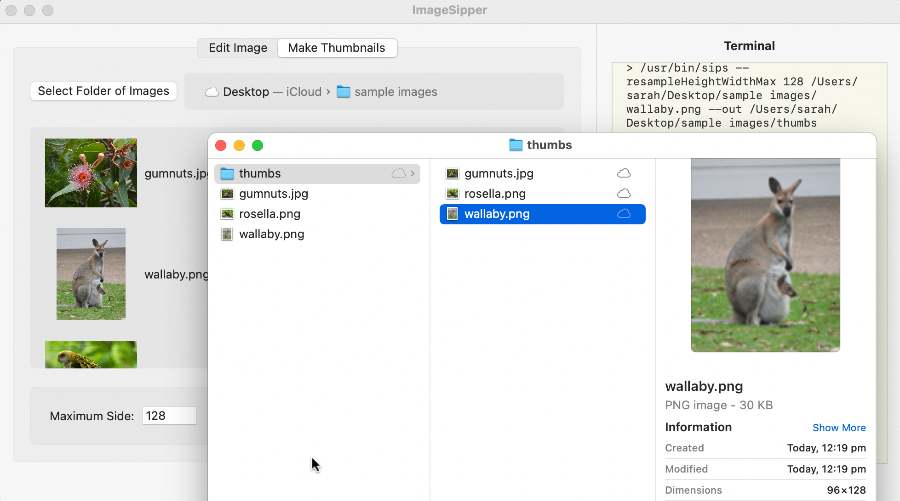
就这样了。你从playground上的一些功能和一个用户界面的应用程序开始，但什么也没做。你以一个可以编辑图像文件和处理图像文件夹的应用程序结束。干得好!
挑战¶
挑战：用ImageSipper创建你的应用程序图标¶
在为本章下载的assets中，打开app icon文件夹。它有一张1024 x 1024的图片，供你作为你的应用程序的启动图标使用。
回到Xcode中，打开Assets.xcassets并点击AppIcon。这显示了你所需要的每种尺寸的图标图像的盒子。有些尺寸有多个框。
建立并运行ImageSipper，并导入开始的图标文件。依次调整大小以获得你需要的所有尺寸。然后把它们拖到AppIcon的盒子里，创建你的图标。
记得使用Shift-Command-K清理构建文件夹，使Xcode将新的图标纳入你的构建中。
关键点¶
- 你之前使用
NSSavePanel来打开一个文件对话框来保存文件。NSOpenPanel与此类似，但它是用来选择文件或文件夹的。 - 拖放在
SwiftUI中运行良好。获取所拖放的数据取决于你的拖放接受的内容。 - 当你使用
NSViewRepresentable或UIViewRepresentable时，添加一个Coordinator允许你的AppKit或UIKit视图对事件做出反应。 - 你在
playground上开发的命令可以很好地转化为应用程序，但从Process中保存文件与Mac沙盒冲突。 - 你可以使用
focused和@FocusState跟踪活动的编辑栏。 - 在最近的
SwiftUI版本中，显示警报的语法已经改变，所以即使你过去使用过它们，你可能不熟悉这里使用的方法。
接下去哪里？¶
这个应用程序选取了两种可能的编辑形式来演示如何处理文件和文件夹。你可能对sips命令有完全不同的使用情况。或者你可能想把你所知道的运用到不同的终端命令中。现在你已经有了所有的工具来完成这两种情况。
在下一章，你将研究自动化问题。你将为ImageSipper添加一个服务，它将出现在标准的Services菜单中。你将发布一个快捷方式，在Shortcuts应用程序中使用。